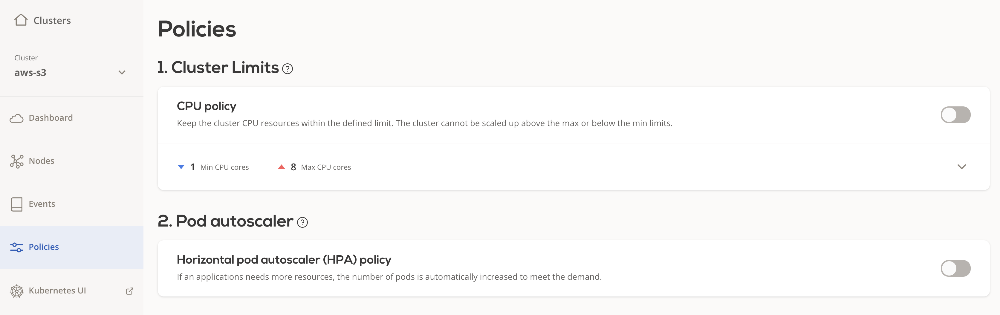
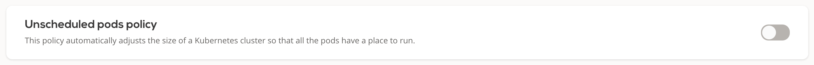
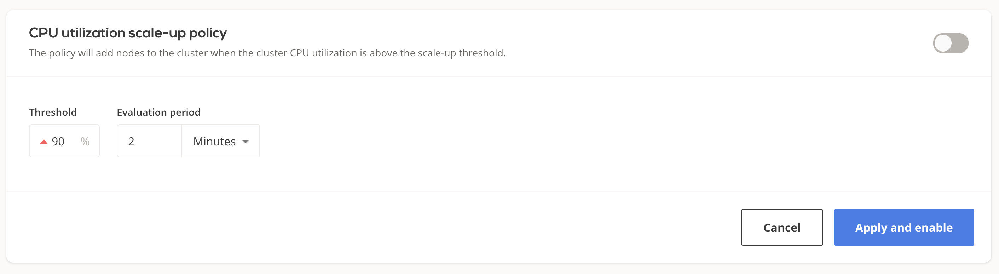

Autoscaling policies¶
Autoscaling policies define a set of rules based on which your cluster is monitored and scaled to maintain steady performance at the lowest possible cost.
This topic describes the available policy configuration options and provides guidance on how to configure them.
Prerequisites¶
To enable the autoscaling policies, you need to create a cluster first. Here's a guide that shows you how to create a cluster: Creating your first cluster.
To see the available policy settings, select your cluster and navigate to Policies on CAST AI's console:

Cluster CPU limits policy¶
Each CAST AI cluster size can be limited by the total amount of vCPUs available on all the worker nodes used to run workloads. If disabled, the cluster can upscale indefinitely and downscale to 0 worker nodes, depending on the actual resource consumption.
Configuring CPU limits policy¶
You can adjust a cluster's CPU limits settings either via the CAST AI console:

or via the CAST AI policies API endpoint by setting values for
"clusterLimits": {
"cpu": {
"maxCores": <value>,
"minCores": <value>
},
"enabled": <value>
}
The new settings will propagate immediately.
Horizontal Pod Autoscaler (HPA) policy¶
See HPA documentation for a detailed overview.
Unscheduled pods policy¶
A pod becomes unschedulable when the Kubernetes scheduler can't find a node that can accommodate the pod. For instance, a pod can request more CPU or memory than the resources available on any of the worker nodes. In many such cases, this indicates the need to scale up by adding additional nodes to the cluster. The CAST AI autoscaler is equipped with a mechanism to handle this.
After receiving the unschedulable pods event, the CAST AI recommendation engine will select the best price/performance ratio node able to accommodate all of the currently unschedulable pods. CAST AI will then provision it and join with the cluster. This process usually takes a few minutes, depending on the cloud service provider of your choice. Currently, only a single node will be added at a time. If any unschedulable pods still remain, the cycle is repeated until all the pods are scheduled (provided that the reason was insufficient resources).
Configuring the unscheduled pods policy¶
You can enable/disable the unschedulable pods policy either on the CAST AI console::

or via the CAST AI policies API endpoint by setting values for
"unschedulablePods": {
"enabled": <value>,
"evaluationPeriodSeconds": <value>
}
It may take a few minutes for the new settings to propagate.
Cluster CPU utilization scale up policy¶
An increased CPU load on worker nodes indicates that the cluster is getting 'hot' - the fleet of nodes might not be sufficient to fulfill the current computing resources needs. In that case, you can increase the computing capacity by adding in additional worker nodes. CAST AI's cluster autoscaler provides a mechanism to handle this with CPU utilization scale up policy. By applying this policy, your cluster is periodically checked for the actual CPU consumption over the worker nodes. When a sustained increased CPU load is detected, the autoscaler automatically adds a new node to redistribute the load more evenly. This process can take a few minutes, depending on the underlying cloud service provider. If an addition is already in progress, the autoscaler will not attempt to add a new node.
Configuring the CPU utilization scale up policy¶
The autoscaler's scale up policy is set by adjusting thresholds for the average cluster CPU load in percentages and evaluation period in seconds. The evaluation window describes for how long the average cluster CPU utilization should stay above the threshold for it to be considered as eligible for scale up.
You can edit settings for this policy via the CAST AI console:

or the CAST AI policies API endpoint by setting values for
"cpuUtilization": {
"scaleUpThreshold": {
"avgCpuLoadPercentageMoreThan": <value>,
"enabled": <value>,
"evaluationPeriodSeconds": <value>
}
}
It may take a few minutes for the new settings to propagate.
Policies precedence rules¶
If multiple policies are enabled and multiple rules are triggered during the same evaluation period, they will be handled in the following order: